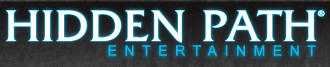

Counter-Strike: Global Offensive é a sequência do popular jogo de tiro em primeira pessoa Counter-Strike: Source, desenvolvido pela Valve. O desenvolvimento da Global Offensive começou quando a Hidden Path Entertainment tentou transportar Counter-Strike: Source para os consoles de videogame antes do final de sua vida útil. Durante seu desenvolvimento, a Valve viu a oportunidade de transformar a porta em um jogo completo e expandir a jogabilidade do antecessor. A Ofensiva Global iniciou o desenvolvimento em março de 2010 e foi revelada ao público em 12 de agosto de 2011. A versão beta fechada começou em 30 de novembro de 2011 e foi inicialmente restrita a cerca de dez mil pessoas que receberam uma chave em eventos destinados a exibir a Ofensiva Global . Depois que os problemas com a estabilidade do cliente e do servidor foram resolvidos, o beta foi aberto para um número cada vez maior de pessoas e, na E3 2012, a Valve anunciou que o Global Offensive seria lançado em 21 de agosto de 2012, com o beta aberto iniciando aproximadamente um mês antes. Antes da versão beta pública, a Valve convidou jogadores profissionais de Counter-Strike para testar o jogo e dar feedback.

Havia planos para multijogador multiplataforma entre jogadores de Windows, OS X, Linux, Xbox 360 e PlayStation 3, mas acabou limitado a incluir apenas as versões para PC devido à diferença na frequência de atualização entre os sistemas. Em 21 de agosto de 2012, o jogo foi lançado publicamente em todas as plataformas, exceto Linux, que não seria lançado até 23 de setembro.
Desde o lançamento inicial do Global Offensive, a Valve continuou a atualizar o jogo, introduzindo novos mapas e armas, modos de jogo e alterações no balanceamento de armas. Uma das principais adições ao jogo após o lançamento foi a atualização "Arms Deal". Lançado em 13 de agosto de 2013, adicionou acabamentos de armas cosméticas, apelidados de skins, ao jogo. Esses itens são obtidos através da remoção de caixas de caixas usando chaves no jogo, das quais só são acessíveis através de microtransações no jogo. As skins também podem ser obtidas de maneiras semelhantes aos itens do Team Fortress 2 e Dota 2, no sentido em que são descartados aleatoriamente. Durante os torneios, os espectadores têm a chance de ser recompensados, caso possam abrir e receber determinadas skins. O Global Offensive oferece suporte ao Steam Workshop, permitindo que os usuários enviem conteúdo criado pelo usuário, como mapas, skins de armas e modos de jogo personalizados. Algumas skins populares criadas pelo usuário são adicionadas ao jogo e são obtidas unboxing-as nos casos. Os criadores das skins são pagos quando o item é adicionado a um caso. Essas skins ajudaram a formar uma economia virtual para a Ofensiva Global, levando à criação de sites de apostas, apostas e negociação.
Eventos chamados "Operações" são realizados ocasionalmente e podem ser acessados por pacotes de expansão compráveis na forma de "passes de operação". Esses passes concedem acesso a objetivos de operação que estão espalhados por diferentes modos de jogo, como Arms Race e Deathmatch, ou em modos de jogo específicos de operação, vistos pela primeira vez na Operação Hydra, lançada em maio de 2017. A conclusão desses desafios recompensa o jogador com XP e a capacidade de atualizar a operação "moeda". Os mapas nas operações são feitos pela comunidade, o que significa que parte da receita gerada é destinada aos projetistas de mapas.
Uma atualização em outubro de 2014 adicionou "kits de música", que substituem a música padrão do jogo pela música de artistas da trilha sonora encomendada pela Valve. Se um jogador com um kit de música equipado se tornar o jogador mais valioso da rodada, sua música tocará para outros no final da rodada. Existe um recurso que permite que os kits sejam emprestados e os kits podem ser vendidos e trocados no mercado comunitário.
Em 2016, o jogo assistiu a dois remakes de mapas originais de Counter-Strike, além da introdução de combinações de itens Prime e itens adicionais. Como parte da promoção da Operação Wildfire, a Nuke foi refeita e relançada em fevereiro, com o objetivo principal de equilibrar o mapa e torná-lo esteticamente mais agradável. Em abril, o matchmaking Prime foi adicionado ao jogo. Para participar desse modo, o usuário precisava ter um número de telefone verificado conectado à sua conta. Foi introduzido em uma tentativa de impedir que jogadores legítimos jogassem com trapaceiros ou jogadores altamente qualificados jogando em contas alternativas e de baixa classificação, uma prática coloquialmente conhecida como "smurfing". Inferno, outro mapa original, foi relançado em outubro. A Valve disse que tinha três razões por trás do remake: "melhorar a visibilidade; facilitar a movimentação em grupos; e ajustá-la com o feedback dos jogadores". Também em outubro, itens consumíveis chamados graffiti foram adicionados ao jogo. Esses itens substituíram um recurso presente nas iterações anteriores da série chamada sprays. Anteriormente, os jogadores podiam personalizar seus sprays. As idéias de graffiti podem ser carregadas no Steam Workshop da mesma maneira que as skins de armas e os jogadores podem comprar e trocar os grafites existentes no jogo. Um mês depois, as skins das luvas foram adicionadas.